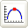
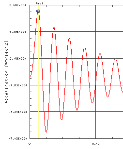
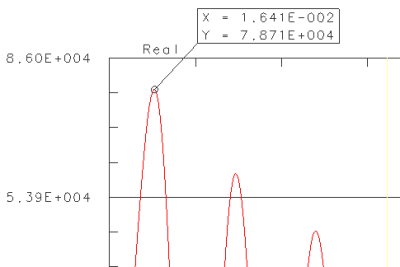

Find the minimum and maximum acceleration
Probe the response function to find the minimum and maximum acceleration of the dynamic response.
 Peak Probing Mode (XY Graph group)
-
 the highest point on the graph curve (to probe the maximum acceleration)
the highest point on the graph curve (to probe the maximum acceleration)

-
Drag the information box for the peak over to a position where you can read it.

Note the maximum acceleration.
-
Repeat the above steps to probe the minimum acceleration.

Close (turn probing mode off)